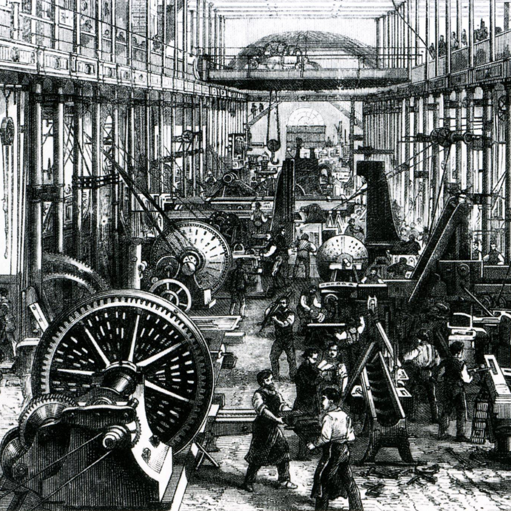

Bevezetés
A hatások
Az ipari forradalom hatalmas hatást gyakorolt az emberi élet minden területére. Az ipari forradalom átalakította a gazdaságot, az életmódot, a társadalmat és a munkakörülményeket.
Az ipari forradalom előtt a legtöbb ember agráripari tevékenységet végzett, és az élet nehéz volt. Az ipari forradalom azonban lehetővé tette az emberek számára, hogy nagyvárosokban éljenek és dolgozzanak, és nagyobb anyagi javakat szerezzenek. Az ipari forradalom azonban sok munkásságot is szenvedést és rossz munkakörülményeket eredményezett, különösen a textil- és bányászati iparban.